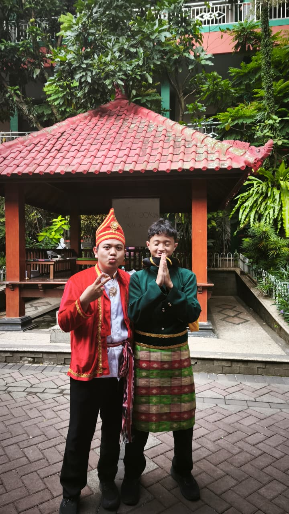

Cerita dimulai ketika izul, siswa kelas X-J yang dipatahkan hatinya oleh seseorang. Dia frustasi, sedih,
dia ingin membuktikan dirinya bisa lebih baik serta layak untuk dicintai. Akhirnya dia memutuskan untuk fokus pada dirinya sendiri. Dia
tidak ingin menjalin hubungan dengan orang lain untuk sementara karena merasa capek dengan hubungan percintaan. Dia sering menemukan
cewek cantik tetapi dia sadar diri, sudah tidak ada hasrat, dan tidak mau mendekati cewek cewek tersebut karena berbagai alasan. Namun diantara mereka semua,
ada 1 wanita yang menurut Izul beda dari yang lain. Awalnya Izul merasa bahwa wanita ini bukan tipenya, tapi semakin lama mengamati, semakin hatinya
tertarik lalu penasaran tentang gadis kecil tersebut.

Izul
Beberapa bulan berlalu, Izul secara tidak sengaja menemukan nama wanita tersebut. Kusyufi Ilmi Aziz, nama itu terus terngiang di kepala Izul
lalu memancing Izul untuk mencari akun instagramnya. Tidak lama, Izul menemukannya tapi langsung minder saat melihat berapa banyak
yang di follow dibandingkan yang ngefollow. Lagi dan lagi, Izul sadar diri, dia tidak jadi ngefollow kiasyfi. Beberapa hari berjalan, Izul semakin sering
melihat akun tersebut namun dia menahan tangannya agar tidak ngefollow. Tapi setiap dia melihat orang itu, dia selalu dilihat balik, itu membuat hatinya gr tetapi pikirannya malah overthingking.
Izul takut kiasyfi risih dilihat terus, Izulpun memutuskan untuk mengetes ke ge er-annya tersebut dengan cara dia mencari momen agar pas pas an dengan kiasyfi saat berjalan di keramaian.
Terjadilah momen itu, Izul segera melihat kiasyfi dan ternyata kiasyfi melihat balik dann pada akhirnya bibit cinta tumbuh sejak saat itu.
Kiasyfi
Selang beberapa hari, sekolah mengadakan skrining kesehatan yang dilakukan kepada para murid. Pada saat itu tes dilakukan urut berdasarkan kelas. Kebetulan kiasyfi ini kelasnya bersebalahan dengan kelas Izul,
kiasyfi berada di kelas X-K yang berarti kelasnya diperiksa setelah kelas X-J. Ketika Izul sudah selesai diperiksa, kiasyfi masih mengantri dengan ekspresi
seperti kesal. Izul penasaran dengan apa yang terjadi, dia melihat kiasyfi dan mengamati apa yang terjadi. Ternyata kiasyfi sedang digoda oleh teman laki sekelasnya. Sebenarnya Izul merasa kasihan, disisi lain juga cemburu,
tapi rasa gemasnya lebih besar dan rasa cinta itupun tumbuh semakin besar. Ia langsung balik ke kelas bersegara ngefollow akun kiasyfi dengan
penuh harapan akan di follow back. Siapa sangka, beberapa menit kemudian langsung di follow back yang akhirnya Izul senang serta mempunyai firasat.
Peak Period
Firasat Izul mengatakan kalau kiasyfi juga mempunyai perasaan terhadapnya. Firasat ini diperkuat dengan note kiasyfi beberapa saat setelah
saling follow. Izul mencoba membalasnya, dan ternyata apa? Ya note tersebut dibalas. Pada saat itu juga hati Izul menemukan rasa yang telah lama hilang, dia kaget
dan kagum sendiri dengan dirinya. Setelah kejadian itu, mereka berdua saling berbalas balasan di note instagram hingga Izulpun memberanikan diri untuk
ngechat duluan. Mereka chat an terus sampai tiba-tiba 2 hari setelah chattan, Kiaa menyatakan perasaannya, disitu hati Izul bagai bunga yang bermekaran sampai
dia salting hingga loncat loncat sendiri. Izul pun menyatakan perasaannya, sejak saat itu mereka saling suka satu sama lain, bibit cinta terus bertumbuh membesar di hati mereka.
Semakin lama, Izul semakin suka dengan Kiaa, sejak itu tipenya berubah ke Kiaa yang imut dan tidak melihat cewek lain lagi. Mereka sangat cocok dan
memiliki banyak kesamaan, mereka bahkan sempat bonceng berdua di tengah hujan yang lebat. Ada banyak hal yang sudah pernah mereka lewati, dari naik motor bersama,
kerja kelas berdua, chat an sampai malem, fashion show, saling memberi, malam tahun baru, gacoan, nobo, video call, dann banyak lagi hal seru lainnya. Namun ada kekurangan
dari Izul, dia sangat tidak peka saat di awal awal bahkan jika Izul mengingatnya sekarang dia akan menyesal dan malu. Contohnya ketika bonceng, dia malah mengarahkan
ke jalan yang rusak, atau saat di gacoan malah Kiaa yang pesan dan ngurus, atau banyak hal lainnya yang Izul sangat sesali. Tapi untung saja Kiaa orangnya baik dan sabar,
jika tidak maka hubungan ini sudah berakhir dari dulu. Izul juga sering merasa bahwa dirinya kurang pantas jika bersama dengan Kiaa yang berprestasi itu.
Difficult Period
Meski begitu, Kiaa tidak mempermasalahkan hal tersebut malahan dia menganggap bahwa Izul sudah baik dan pantas terhadapnya. Izul sangat senang mendengarnya, tetapi terkadang masih ada
aja pikiran seperti itu yang menghantuinya cuma kali ini Izul sudah bisa mengatasi. Hari demi hari terus berlalu, mereka masih saling ngechat tetapi disisi lain Kiaa semakin sibuk dengan
urusan osis. Nah maka dari itu Izul ada ide untuk membuatkan Kiaa website untuk menyemangati Kiaa agar semangat dalam urusannya. Akhirnya jadilah website itu dan Kiaa terlihat sangat suka,
Izul turut senang karena karyanya dihargai. Bahkan Kiaa mengupload website tersebut di sgnya, itu membuat Izul merasa bangga seolah olah dia menjadi pemenang di hidupnya.
Website Izul di sg Kiaa
Namun setelah dibuat website itu, hubungan menjadi kurang stabil. Mungkin butterfly era mereka telah berakhir dan berganti ke fase dimana banyak pasangan mulai bosan dan kehilangan rasa. Izul
yang sadar akan hal itu terus mencoba untuk menghibur Kiaa agar hubungan ini tetap bertahan. Kadang status mereka naik, kadang turun, kadang datar, tapi Izul tetap positif thingking apapun statusnya.
Chat terus berjalan dari waktu ke waktu, bahkan sampai setelah ujian tahfidz. Namun setelah ujian tahfidz, chat terasa sangat hampa dan tidak se aktif dulu. Izul disitu memiliki banyak dugaan, salah satunya
kalau hubungan ini akan berakhir, disitu Izul masih terus berusaha untuk mengembalikan hubungan seperti dulu lagi tetapi disisi lain feelingnya semakin menguat. Setelah perasaan yang kuat itu, Izul pun memilih untuk menikmati masa masa akhir
dengan Kiaa itu. Semoga saja hubungan mereka membaik dan mereka kembali seperti dulu lagi.